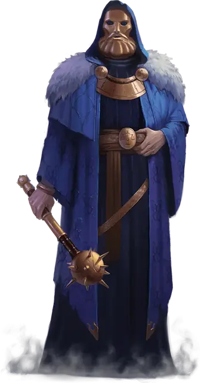

Страж Горма
Guardian of Gorm
Средний Гуманоид, законно-добрый

Класс Доспеха 16 (кольчуга)
Хиты 9 (2к8)
Скорость 30 футов
| мод | спас | ||
|---|---|---|---|
| СИЛ | 15 | +2 | +5 |
| ЛОВ | 10 | +0 | +0 |
| ТЕЛ | 10 | +0 | +0 |
| мод | спас | ||
|---|---|---|---|
| ИНТ | 10 | +0 | +0 |
| МДР | 13 | +1 | +4 |
| ХАР | 12 | +1 | +1 |
Навыки Атлетика +4, Проницательность +3, Религия +2
Чувства пассивное Восприятие 11
Языки Общий
Опасность 1/8 (25 опыта)
Бонус мастерства +2
Особенности
Храбрый. Страж совершает с преимуществом спасброски от состояния испуганный.
Действия
Электрическая булава. Рукопашная атака оружием: +4 к попаданию, досягаемость 5 фт., одна цель. Попадание: 5 (1к6 + 2) колющего урона плюс 2 (1к4) урона электричеством.
Ручной топор. . Дальнобойная или рукопашная атака оружием: +4 к попаданию, досягаемость 5 фт. или дистанция 20/60 фт. Попадание: 5 (1к6+2) рубящего урона.
Описание
Стражами Горма становятся непоколебимые кинидцы, поклоняющиеся Горму — древнему богу правосудия, бурь и войны. Члены ордена носят латунные маски, изображающие лик их божества, который выглядит как длинноволосый, бородатый мужчина с суровым взглядом. У каждого прошедшего инициацию стража на правом плече вытатуирована маленькая синяя молния.
Они следуют строгому кодексу чести, в котором ценятся храбрость, честность и справедливость, сдобренная милосердием. Тем не менее, они скоры на расправу над богохульниками, преступниками и культистами, выступающих против их дела, изничтожая их своими шокирующими орудиями.
Страж Горма
Стражи являются бесстрашными рядовыми своей фракции.